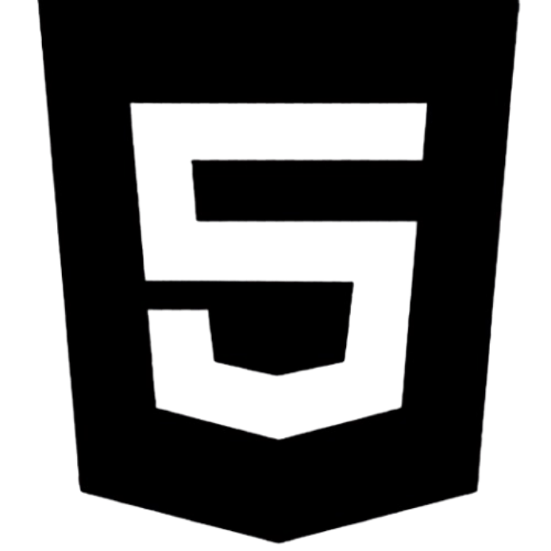
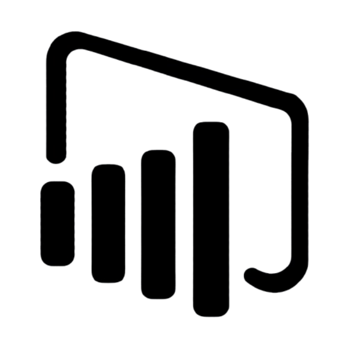

A arte do desenvolvimento de software.
Victor Lima - Desenvolvedor de Software
A arte do desenvolvimento de software.
Victor Lima - Desenvolvedor de Software
Meu nome é Victor Lima. Sou estudante e desenvolvedor de software, focado na criação de soluções práticas e centradas no usuário. Possuo experiência com desenvolvimento web, bancos de dados, análise de dados e design de interfaces, buscando constantemente aprimorar minhas habilidades técnicas e de colaboração por meio de projetos acadêmicos, pessoais e profissionais.
Desenvolvimento Full Stack, Desenvolvimento Web, Engenharia de Software, Gerenciamento de Bancos de Dados, Análise de Dados, Design de Interface do Usuário (UI), Experiência do Usuário (UX), Inteligência Artificial, Business Intelligence e Inovação Tecnológica.
Português - Nativo
Inglês - Intermediário
Meu objetivo é construir uma carreira sólida na área de tecnologia como Desenvolvedor de Software, criando soluções inovadoras e eficientes que gerem valor real para usuários e empresas. Busco aprimorar continuamente minhas habilidades em engenharia de software, desenvolvimento web, bancos de dados e tecnologias emergentes, contribuindo para projetos desafiadores e equipes colaborativas. No futuro, pretendo assumir responsabilidades maiores, participar de projetos de grande escala e me tornar uma referência na área por meio do aprendizado contínuo e do crescimento profissional.
Técnico em Desenvolvimento de Sistemas – SENAI
2023 – 2024
Tecnólogo em Desenvolvimento de Software Multiplataforma – FATEC
2025.2 – Atual
Microsoft - Power BI 900
Github




